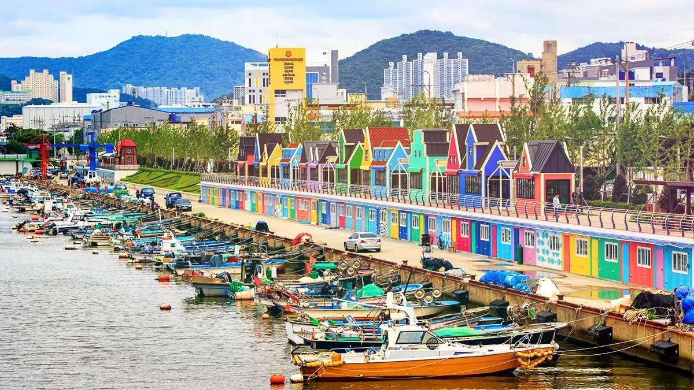
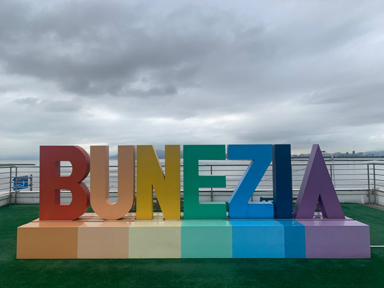
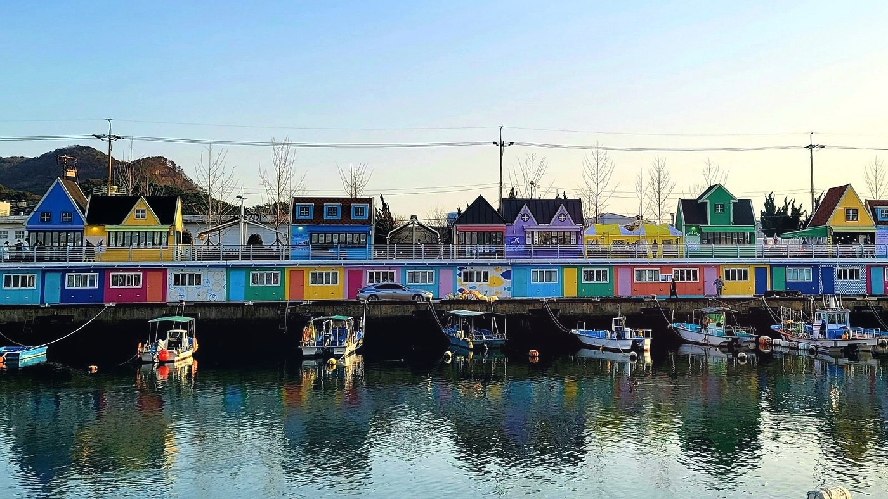
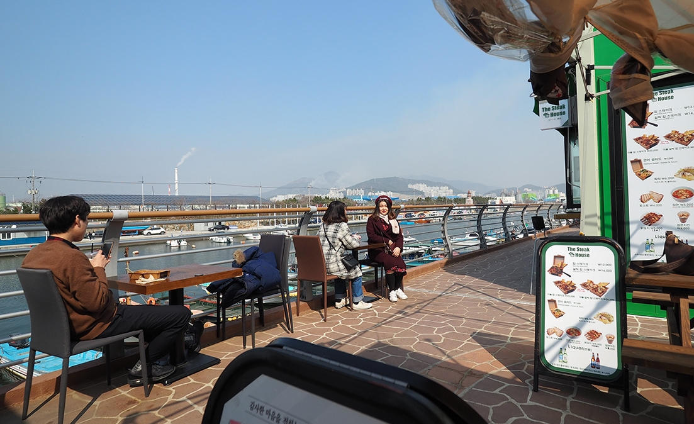
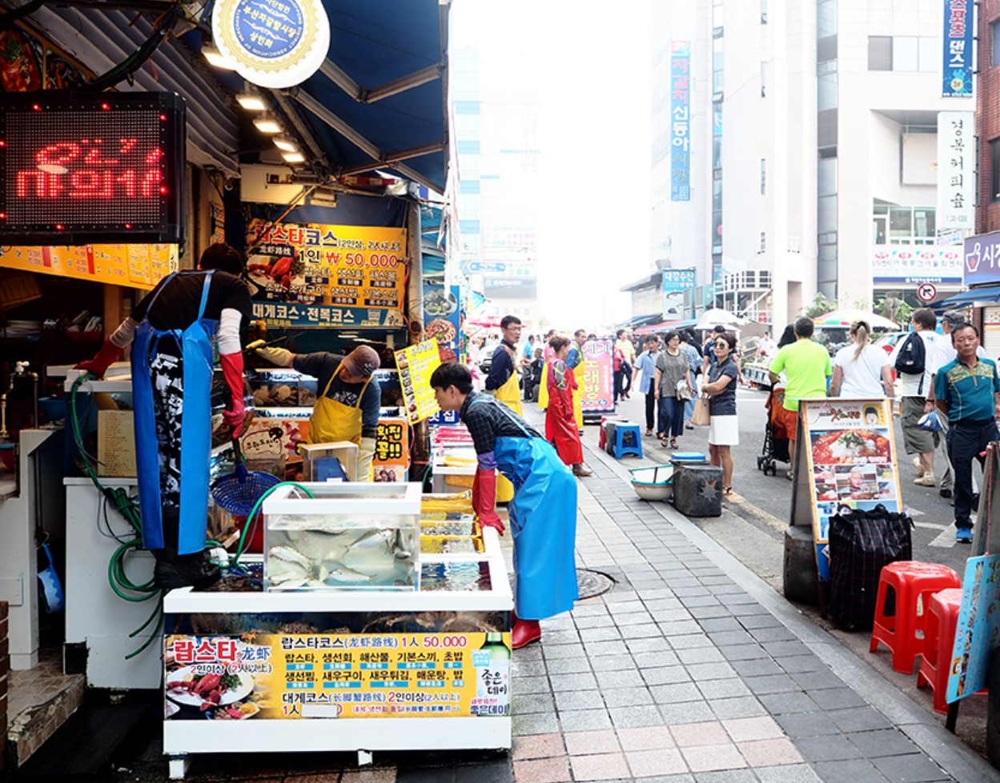
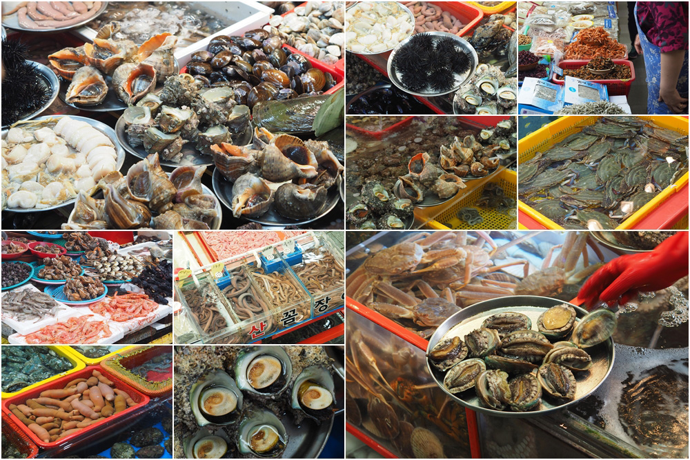

Jangnim Harbor หรือที่คนเกาหลีเรียกว่า 장림포구 (จังนิมโพกู) คือ ท่าเรือประมงขนาดเล็กที่ตั้งอยู่ในเขตซาฮากู (Saha-gu)
เมืองปูซาน ประเทศเกาหลีใต้ เนื่องจากความร่วมมือระหว่างรัฐบาลท้องถิ่นและชาวบ้านที่ได้ร่วมกันพลิกโฉมจากอดีตท่าเรือประมงเงียบๆ
ในเขตอุตสาหกรรม ให้กลายเป็นแลนด์มาร์กสุดน่ารักที่มีชีวิตชีวา และได้รับฉายาว่า "เวนิสแห่งปูซาน" หรือที่เรียกว่า Bunezia
เป็นคำผสมระหว่าง Busan + Venezia จุดเด่นคือโกดังเก็บของสีพาสเทลสดใส ตัดกับเรือประมงที่จอดเรียงราย เป็นจุดถ่ายรูปสุดยอดนิยม
สำหรับสายคอนเทนต์ มีบรรยากาศชิลๆ และร้านขายออมุก (ลูกชิ้นปลา) แสนอร่อย
สิ่งที่น่าสนใจที่ Jangnim Harbor มีมากมาย ไม่ว่าจะเป็นการชมสถาปัตยกรรมที่งดงามของท่าเรือ หรือการเข้าร่วมกิจกรรมต่างๆ
ที่จัดขึ้นในบริเวณท่าเรือ และด้วย Jangnim Harbor ตั้งอยู่ในพื้นที่เมืองปูซาน จึงยังมีสิ่งที่น่าสนใจอื่นๆ อีกมากมาย


ชั้น 2 จะเป็นร้านอาหารง่ายๆ กินรองท้องได้ บรรยากาศของชั้น 2 จะเป็นทางเดินที่จัดวางได้สวย ซึ่งร้านอาหารแต่ละร้าน
ก็จะมีวันหยุดที่ไม่เหมือนกัน หากอยากกินร้านไหนต้องทำการหาข้อมูลมาก่อน อาหารอร่อยราคาไม่สูงเหมือนร้านทั่วไป

ตลาดปลาจากัลชี (Jagalchi Market) เป็นตลาดปลาและอาหารทะเล ทั้งแบบสด และแบบตากแห้งที่ใหญ่ที่สุดของเกาหลี
อีกหนึ่งแลนมาร์คของเมืองปูซานที่ไม่ควรพลาด ตลาดจะอยู่ตรงข้ามกับ BIFF Square มาลงสถานี Jagalchi (Exit 10)
เปิดตั้งแต่ 05:00-22:00 แนะนำให้มาตั้งแต่ 9 โมงเช้าเป็นต้นไป เพราะตลาดจะเปิดทั้งส่วนของภายนอก และร้านภายในอาคาร


รถไฟใต้ดิน Busan สาย 1 ลงที่สถานี Janglim (Exit 1) ต่อรถ Taxi หรือ Bus
รถเมล์ท้องถิ่น (Saha-gu 5) ที่ป้าย Janglim Elementary School ลงที่ป้าย Janglim Port (Bunecia) เดินต่อประมาณ 2 นาที
รถเมล์สาย 3-1 ที่สถานี Sinpyeong Station (Exit 3) แล้วต่อรถเมล์ท้องถิ่น (Saha-gu 5) ลงที่ป้าย Janglim Port
ถ้าเงินเหลือ เรียก Taxi เลย ถึงไวสุด 😁😁